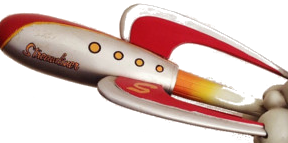

Social media, community engagement, public relations
Led by Craig Oda, former SVP of emerging brands at a global public relations firm and managing partner of a well-known social media firm. Experience working with 100+ startups in Silicon Valley as well as global B2B technology brands, including many of the biggest names in the Valley.
Boutique consulting firm in Palo Alto specializing in ongoing public relations and social media campaigns on retainer. We emphasize metric analysis as part of the campaigns and look at web analytics, social media metrics, and funnel conversion.
We focus on overall public relations campaigns for early stage technology companies and standalone social media and community campaigns for companies with 150+ employees.
Organize messages and positioning
Identify top media and analysts
Outreach to media
Produce content on social channels
Engage with community
Metrics reporting
Corporate blog management and writing
Contributed article placement and creation
| Activity | Process | Deliverable |
|---|---|---|
| Story development | Brainstorm with stakeholders. Analyze media trends. Research industry analysts. | Story descriptions that attract attention of key media, bloggers, and analysts. |
| Media relations | Identify key reporters and bloggers. Develop specific messages for each reporter. | Unique stories. |
| Analyst relations | Track key analysts in market. Review reports and media commentary. | Analyst briefings. Inclusion in analyst reports. |
| Speaking | Track speakers and speaking opportunities. Write summary of talk. Propose to organizers. | Lists of relevant speakers and shows. Speaking proposals. Speaking slots if accepted. |
| Activity | Process | Deliverable |
|---|---|---|
| Creative - Story development | Identify why the community should care about your product. Clarify market position of product or technology in the context of larger trends. | Written recommendations for messages that will engage community with example descriptions of different lengths. |
| Analysis - Competitor strength, weaknesses, best practices | Analyze full software adoption process for two competitors. | Written summary of findings. Presentation of recommendations. Written plan. |
| Content Production - Writing blog posts | Interview stakeholders. Record interview. Write 2- 3 blogs from interview | Self-publish blogs to community site. Can also try to place on third-party site. |
| Access - Make sure people can easily get access to the community | Analyze how easy it is for people to join the community and how they can participate. | Written recommendations. Can manage project to improve access. |
| Education - Develop written or video tutorials. | Compare tutorials to competitors or other company used as baseline. Can create tutorials with help of community. | Written plan. Can create short YouTube tutorials or written tutorials by working with the community. |
| Engagement - Meetup | Organize venue, participants, equipment for smaller events. Can provide onsite support to capture content at larger events. | Content produced at event from interaction with participants. If it is a smaller event, o3 Rocket can run the event. |
Previous experience
For many years, I focused on company launches, product launches, and rebrand launches. The initial idea for rocket came from a desire to help companies take off.
In the first PR company I worked it, we had a lot of toy rockets around the office. They were given to us as a barter for services from a man that used to build Hollywood movie sets but was getting squeezed out by digital special effects. He decided to change careers and build rockets. It was such an interesting story that reporters loved it. As a way of saying thanks, he shipped us a box of rockets.

Social Media